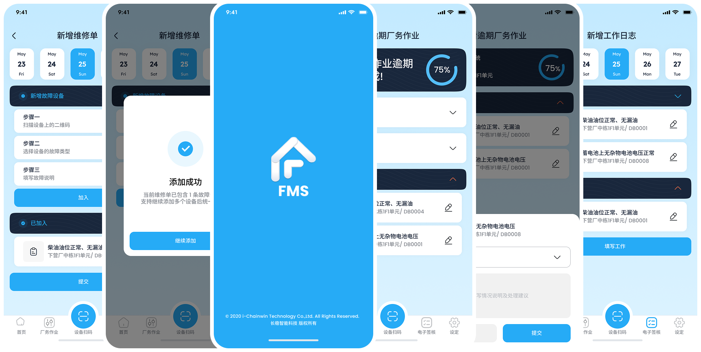
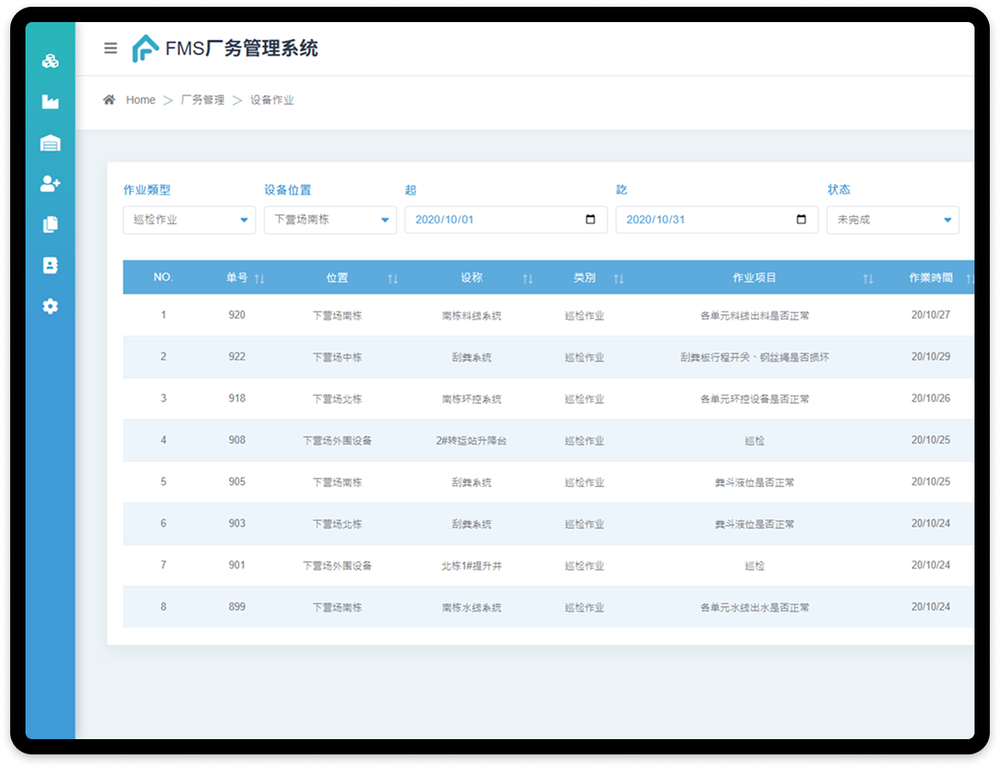
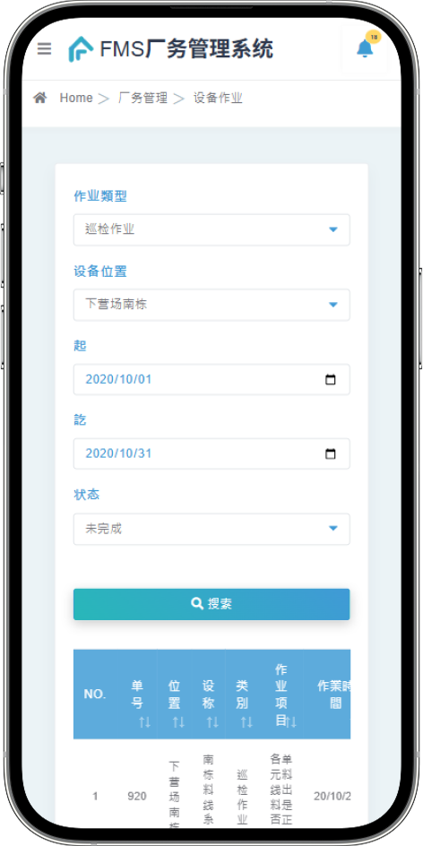
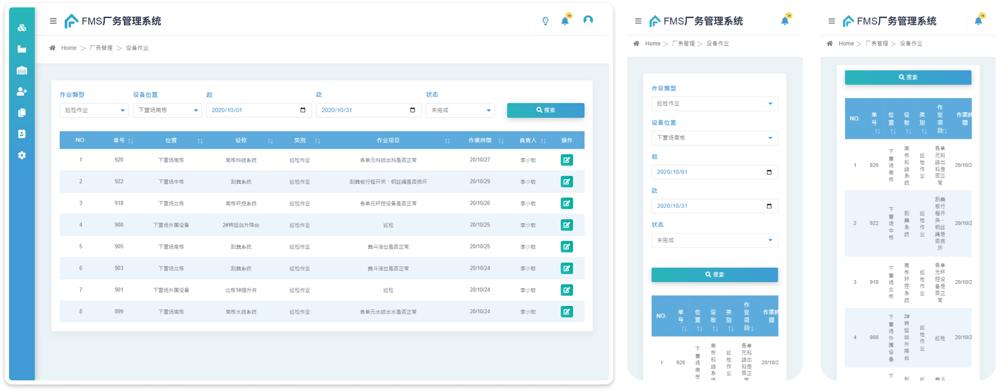
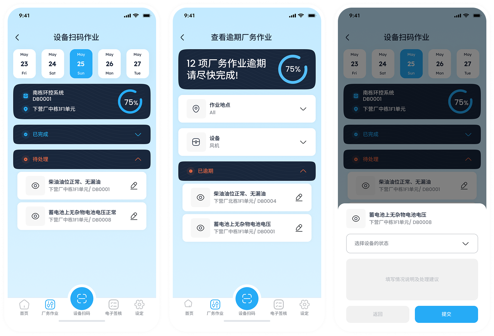
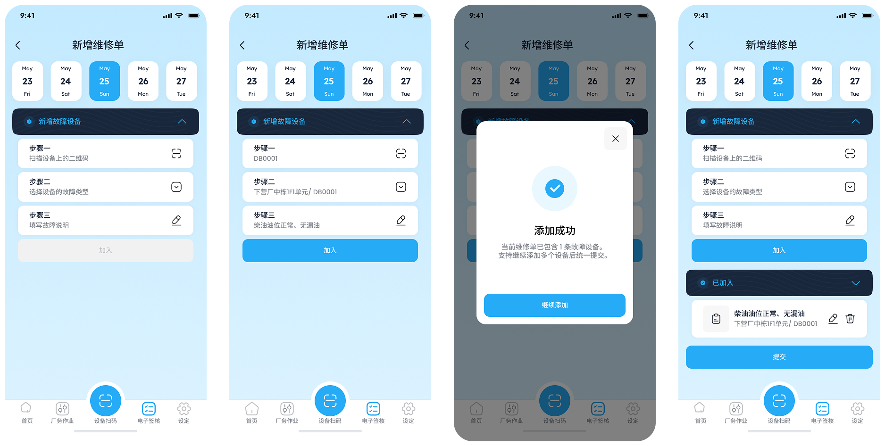
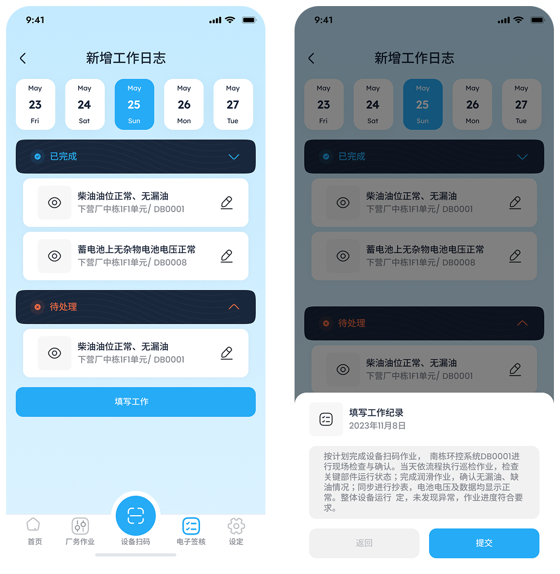

核心挑戰
原系統是管理端Web思維，現場用手機操作很不好用。結果導至現場人員回報慢、常漏填，最後還得返工補資料。



原FMS廠務系統以管理者使用的Web平台為主，為主管分配工作、管理簽核流程用。工務人員雖可透過手機登入操作，但介面層級複雜、分類過多，與現場作業情境不符。日常需頻繁登入登出、手動填寫巡檢資料並查找設備資訊，不僅耗時，也容易產生錯誤。
隨著廠區規模擴張，巡檢、抄表與保養等作業量增加，手動回報流程成為現場效率與資料即時性的主要瓶頸。為解決此問題，我們開發了FMS行動 App，協助工務人員於現場即時記錄作業並完成電子簽核，簡化流程、降低人工負擔，並同步將資料回傳至管理端。
原系統是管理端Web思維，現場用手機操作很不好用。結果導至現場人員回報慢、常漏填，最後還得返工補資料。
針對專案需求進行用戶訪談、梳理用戶痛點、流程圖規劃、設計系統建置、UI 視覺設計、prototype製作與開發對齊落地。
我們訪談二類核心用戶，填表回報重點是要讓他們能省時間、少返工、少漏填，
現場要能當下完成、主管能即時追蹤他們的工作進度就好。
前面訪談後，我們確認現場的核心不是功能多，而是「少找、少填、少反工」。所以在進入介面設計之前，我先把工務人員與維修技師的日常任務拆成可執行的最短路徑，重新整理流程。你會在下面看到我們如何以「掃碼直達」作為單一入口，把定位設備、填寫回報、送出簽核這些高頻動作收斂成3步內完成，確保現場在光線不穩、網路不穩、戴手套操作的情境下，仍能順利完成回報並同步回傳管理端。
用戶反饋: 要一直對設備編號和表單，有時找很久，設備多又分散。 有時編號看起來很像，要一個一個比對，找設備、找表單其實就花掉不少時間。


相對 Web 需要多層選單與關鍵字搜尋，掃碼即可帶出設備與待辦作業，降低找錯設備的風險。
集中呈現位置、狀態與維修紀錄，讓現場判斷更快，後續追查有依據。
簡化流程、下拉選單直接選取設備狀態、降低手動填寫錯誤，3步驟以內回傳資料至管理端。
掃描設備條碼，自動帶入設備資訊。
從下拉選單中快速選取異常狀況，減少因手動輸入產生錯誤的機率。
把「描述異常→送出→進入處理流程」拉成一條線，減少跨班交接的資訊落差。

支援依日期篩選與瀏覽，日誌內容清晰可追溯。
系統自動帶入已完成與待處理項目，免手動輸入提升效率。
除工作進度外，也可補充交接事項， 讓主管線上簽核確認。

FMS App 的設計規範以「現場可用」為前提，而非追求花俏。色彩以高辨識的藍色為主，並搭配多階灰階區分層級，確保在廠房光源不足、走動中快速掃讀仍清楚。由於現場多為亮度不穩與反光環境，本專案不設計dark mode，改用提高對比、放大關鍵資訊與明確狀態回饋來提升可讀性。
掃碼直達與流程精簡，讓工務人員能在設備旁當下完成回報，把原本一天累積到下班才補寫的 填單時間從最長90分鐘縮短到約20分鐘 ，同步降低事後補填與遺漏風險。
透過結構化欄位、預設選項與即時狀態提示，現場填報更不容易漏掉關鍵資訊，讓漏填退件率從18%降到6%，也減少被退回重寫、來回確認造成的返工成本。 結構化欄位＋即時狀態提示，降低填錯、缺漏與被退回重寫的機率。
任務、維修與工作日誌資料在現場完成後即刻同步回傳管理端，主管不必等人補件或等晚點彙整，追蹤與掌握進度的時效從 2–3 天縮短到半天，查詢紀錄與稽核也更有依據。